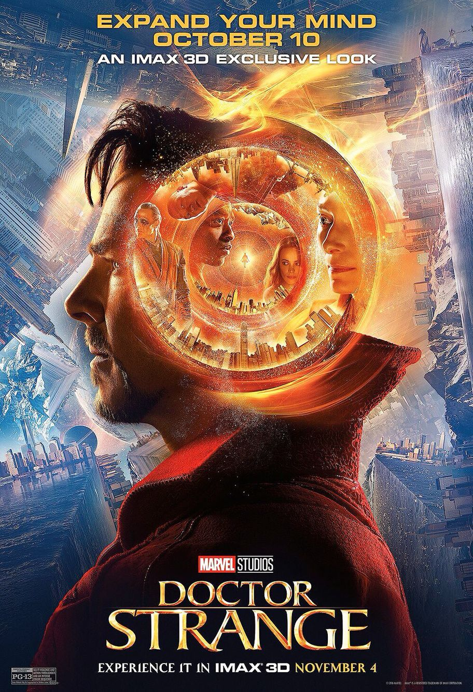

|  |
Movie Name: |
Doctor Strange (2016) |
|
A sorcerer, later revealed to be Kaecilius (Mads Mikkelsen), tears some pages from a chained book in a library and escapes with the help of several followers. The owner of the book, whom we later meet as the Ancient One (Tilda Swinton), goes after them. As he flees, Kaecilius bends, folds, and reshapes the streets and buildings of the city (think Inception, but more kaleidoscopic). Though she's a formidable magical fighter, the Ancient One is unable to pin down Kaecilius and he escapes. Dr. Steven Strange (Benedict Cumberbatch) is cool and confident as he performs a delicate brain surgery. As he finishes, Dr. Christine Palmer (Rachel McAdams) rushes in to show him an x-ray of a patient with a bullet in the brain. He goes to the ER surgery and quickly does a manual extraction with forceps, demonstrating his impressive hand control. He and Christine joke about their on-again, off-again relationship. She turns down his request to join him that evening. Strange dresses for the evening in his expensive condo (modern decor, lots of windows, amazing views), pausing to choose from a drawer full of high-end watches. Speeding out of his condo in his Lamborghini Huracán, Strange heads north. He calls an assistant to consider his next patients; he's in high demand but he wants only difficult, interesting cases. Distracted and driving recklessly, he crashes and the car plunges into the river. He is airlifted back to his hospital and Christine is there when he awakens, badly hurt. His hands have had to be rebuilt and are immobilized in a framework of pins and wires. Recovering slowly after further surgeries, his hands remain stiff and shaky -- he can no longer work as a neurosurgeon. Feeling sorry for himself, Strange breaks up with Christine. He hears about a man called Jonathan Pangborn (Benjamin Bratt) who, inexplicably, recovered from a half-body paralysis. Strange finds Pangborn playing basketball and the man tells him he found the cure in Kamar-Taj. Strange makes his way to Nepal and wanders the streets of Kathmandu. He is noticed and followed. Mordo (Chiwetel Ejiofor) saves him from muggers and takes him to Kamar-Taj. There he meets the Ancient One. She knows all about Strange and introduces him to a new reality. He begins training and slowly learns to open gates to jump across the world. He learns the temple is part of a secret group saving the world from enemies in other dimensions and universes. While training, Mordo shows Strange a magic stick, a relic and says the relics must choose him. He explains that Kaecilius, a former student of the Ancient One, has stolen a spell from a book and escaped with three zealots; there is worry he will decipher the spell and call in Dormammu from the Dark Dimension to take over the world. Strange is upset and says he hasn't come to join their group, only to cure his hands. Strange visits Kamar-Taj's library, which is kept by Wong (Benedict Wong). He quickly learns how to use a time-shifting pendant, the Eye of Agamotto, which enables him to see the missing page from the book. Mordo tells him it is forbidden to use time spells as they can cause time loops and other problems. There are three Sanctums, in London, New York, and Hong Kong, where the group watches out for the world. Kaecilius finally deciphers the stole spell and his group attacks the London Sanctum, a plain building with a logo window. The backlash from the London Sanctum throws Strange through a door and into the New York Sanctum. The building is deserted as he wanders the floors looking at various artifacts. He notices a burgundy cloak in a glass case that moves as he looks at it. At the end of a corridor he finds three glass doors that turn out to be gateways to other places; you change the destination by turning a dial next to each door. Kaecilius and his group attack the New York Sanctum. Strange develops fighting skills on the fly. He gets rid of two zealots using the gateways and the burgundy cloak, a relic which seems to have some intelligence and wraps itself around him. The cloak helps him subdue the third zealot and restrain Kaecilius. Strange and Kaecilius have a talk about the Ancient One and immortality in which Kaecilius claims that the Ancient One has achieved her long life using powers from the Dark Dimension. Once Strange lets down his guard the third zealot revives and stabs him. Strange manages to open a gate and stagger into a cleaner's closet in Christine's hospital. He barely manages to get on a table as Christine hooks him to a heart monitor and removes a excess blood from around his heart. Meanwhile, Strange separates his astral body and continues to fight the zealot, finally killing him with the help of a defibrillator. The zealot isn't visible to Christine, but she can tell something is going on and she's very spooked. Sewn up and recovering, Strange tells Christine he must return and goes back through the gate. Kaecilius has escaped and Mordo joins Strange in New York. The Ancient One also comes and suggests Strange take over the New York Sanctum; he refuses. They're impressed the magical cape, known as the Cloak of Levitation, has chosen him. Kaecilius returns with more zealots and Strange creates a Mirror Dimension to contain the fight and they go out into the street. Kaecilius uses his powers to shape-shift the city (as he did in the opening scene when he fought the Ancient One) and disorient Strange. The Ancient One returns to help but she falls and is mortally wounded. Strange takes her to Christine's hospital but it is too late. Strange follows the Ancient One's spirit in his astral form and they talk overlooking New York City. She accepts this is her end and suggests Strange can take over. Back in the New York Sanctum, Strange and Mordo realize Hong Kong is next on Kaecilius' list. They gate over but the Hong Kong Sanctum has been overrun. Wong, who was guarding it, is dead and Dormammu's Dark Dimension is growing from the location of the Sanctum. Strange uses the Eye of Agamotto to start reversing the process but Kaecilius recovers and manages to stun Strange, stopping the process before it can complete . Strange thinks of something and flies off into the heart of the Dormammu's Dark Dimention. Here, he confronts Dormammu and manages to create an infinite time loop: Strange gets killed in various ways but is always reset. Dormammu is furious but finally agrees to leave Earth alone in return for Strange stopping the time loop. Back on the street, Strange sends Kaecilius and his crew into the Dark Dimension just before it vanishes. Mordo is upset that Strange broke the rules in using the time pendant and that the Ancient One used what he considers to be forbidden powers to prolong her life. Before she died, the Ancient One warned Strange that Mordo was very big on following the rules -- both his weakness and his strength -- and that Strange's flexibility would be an important factor when they worked together. But Mordo says there must be a reckoning and he retires from the group and walks away. Strange takes over the New York Sanctum. He puts the Eye of Agamotto back in its guarded place at Kamar-Taj, where Wong tells him it's an infinity stone. Sometime later Dr.Strange sits with Thor and agrees to help him find Odin and rid Earth of Thor's scheming brother, Loki. And Mordo visits Pangborn and takes back the magic repairing his back. Pangborn collapses. Mordo says the problem is too many sorcerers on Earth. |
||